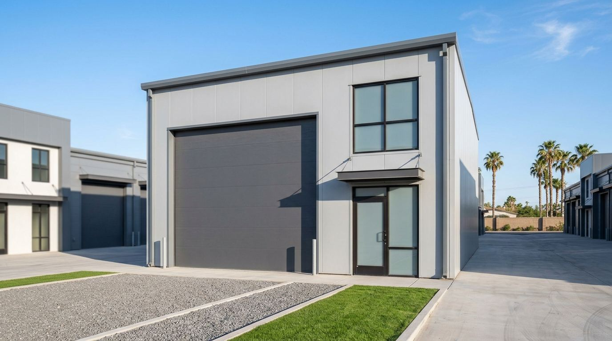

Car Condos in Kansas: 2026 Market Guide

Kansas has a small but surprisingly varied car condo market, split almost evenly between two metros. The AutomotiveCondos.com directory tracks 11 car condo and garage condo communities in Kansas: six in the Wichita area and five on the Kansas side of the Kansas City metro. Between them they cover nearly the full spectrum of the product, from small storage garages published at $75K to large luxury suites of up to 3,500 square feet.
For buyers, that means real choice in both metros. Wichita offers some of the lowest published car condo prices in the directory, while Johnson County offers larger, more upscale suites and a major planned project. This guide covers every Kansas community, what they cost, and how to choose. All figures come from the full Kansas directory, which you can also explore on the interactive map.
Kansas Car Condos at a Glance
- 11 communities in 9 cities: 6 in the Wichita area (Wichita, Derby, Haysville and Kechi) and 5 in the Kansas City area (Bucyrus, De Soto, Leawood, Overland Park and Shawnee).
- 6 are selling from the developer, 2 are resale only, 2 are established and 1 is planned.
- 162 known units across the 5 communities that publish a count. The planned Foundry in Leawood accounts for 88 of them.
- Published prices run from $75K (the low end at My Extra Garage Derby) to about $440K (resales at All Purpose Garage & Storage in Bucyrus).
- Wichita has 3 communities, more than any other Kansas city.
Car Condos in Wichita and South Central Kansas
Wichita is known as the Air Capital of the World for its aircraft manufacturing history, and the city has the mechanical, hands-on culture you would expect from that. Hot rods, muscle cars, trucks and project builds are a big part of the local scene, and plenty of owners need more space than a home garage provides. The directory lists six communities in the Wichita area, more than half the state total.
Wichita (3 communities)
GreenLight GarageDominiums is selling 29 units from $299K, the highest published new-unit starting price in Wichita and a signal that it targets buyers who want a finished, upscale space. Sandlot Garage Condos is selling on an inquire basis, and Greenwich Garage Condos is an established community. Browse every option on the page for car condos in Wichita.
Derby, Kechi and Haysville (3 communities)
The Wichita suburbs offer the most affordable entry points in Kansas. My Extra Garage Derby, southeast of Wichita, is selling 7 units from $75K to $150K. Mammoth Storage Garage Condominiums in Kechi, on the north side of the metro, is selling 6 units from $125K to $150K. Flex Space KS in Haysville, south of Wichita, is selling on an inquire basis.
These are small projects. Seven units and six units mean an intimate community and limited inventory, so if one of them fits your needs, move early. Small projects also mean fewer owners to share HOA costs, which can make it even more important to review the budget and reserve plan.
Car Condos in the Kansas City Area
The Kansas side of the Kansas City metro, especially Johnson County, is one of the most affluent areas in the region and has a strong collector community. Kansas Speedway in Kansas City, Kansas, adds racing culture to the mix. The five communities here lean larger and more upscale than Wichita's.
Leawood and Overland Park
The Foundry in Leawood is planned at 88 units, by far the largest project in Kansas, and reservations are open. If you are interested, ask about deposit terms, timeline and unit specifications now, since early reservations typically get the best choice of location. The Lux in Overland Park is selling suites from 1,250 to 3,500 square feet. At that size, you are looking at space for multiple vehicles plus a lounge, workshop or display area.
Shawnee, De Soto and Bucyrus
Park 33 Premium Coach Suites in Shawnee is an established community. "Coach suites" suggests a focus on larger vehicles such as motorcoaches, so ask about door and ceiling dimensions if you have an RV. Carriage Houses of Johnson County in De Soto trades on resale only, with resales from $247K to $275K. All Purpose Garage & Storage in Bucyrus, south of Johnson County, is a 32-unit resale-only community with resales around $440K, the highest published price point in Kansas.
What Car Condos Cost in Kansas
Five Kansas communities publish a price or range. The chart compares the published entry point (or the approximate resale level) for each.
The pattern is clear:
- Wichita suburbs are the value play. Derby and Kechi both top out at $150K, which is below the starting price of many projects in larger metros.
- Upscale Wichita and Johnson County sit at roughly $250K to $300K. GreenLight starts at $299K and Carriage Houses resales run $247K to $275K.
- Large resale units can exceed $400K. All Purpose Garage & Storage resales around $440K reflect larger units and a well-established community.
- Six communities do not publish a purchase price, including the two largest-format options (The Lux and The Foundry). Ask for current pricing and recent sales.
For annual ownership costs, read our cost guide.
Project Size in Kansas
Kansas projects are smaller than those in the big Midwest storage condo markets. Only five publish a unit count, and the planned Foundry is larger than the other four combined.
Smaller communities can be quieter and more personal, but they also produce fewer resales, which makes it harder to judge value and can make it slower to sell later. Larger communities usually have more active associations and more comparable sales.
Kansas Car Condo Communities: Full List
| Name | City | Status | Pricing |
|---|---|---|---|
| All Purpose Garage & Storage | Bucyrus | Resale only | Resale ~$440K |
| Carriage Houses of Johnson County | De Soto | Resale only | Resales $247K to $275K |
| My Extra Garage Derby | Derby | Selling | $75K to $150K |
| Flex Space KS | Haysville | Selling | Inquire |
| Mammoth Storage Garage Condominiums | Kechi | Selling | $125K to $150K |
| The Foundry | Leawood | Planned | Reservations open |
| The Lux | Overland Park | Selling | 1,250 to 3,500 sq ft suites |
| Park 33 Premium Coach Suites | Shawnee | Established | Inquire |
| GreenLight GarageDominiums | Wichita | Selling | From $299K |
| Greenwich Garage Condos | Wichita | Established | Inquire |
| Sandlot Garage Condos | Wichita | Selling | Inquire |
Who Buys Car Condos in Kansas
The Kansas buyer pool is broad, and knowing who your neighbors will be helps you pick the right community:
- Collectors and builders. Wichita's hands-on car culture means many buyers want a place to work on cars, not just park them. Ask about power, lighting, lift clearance and whether the declaration allows mechanical work in the unit.
- RV and boat owners. Kansas lakes such as Cheney Reservoir near Wichita and Clinton Lake near Lawrence, plus a large RV population, drive demand for deep units with tall doors. Many suburban HOAs in both metros restrict outdoor storage of boats and trailers.
- Johnson County executives and enthusiasts. Larger suites such as The Lux and planned projects such as The Foundry appeal to buyers who want a finished space for entertaining and displaying cars.
- Small business owners. Flex-style projects can work for contractors and online sellers who need secure space for equipment and inventory, where the rules allow it.
Kansas-Specific Buying Considerations
Severe weather
Kansas sits in the middle of the country's severe weather belt. Hail, high winds and tornadoes are a real risk to vehicles, and a solid, well-built garage is one of the best protections you can buy. Ask about the building's construction and roof, the association's master policy, and make sure your own policy covers vehicles and contents stored in the unit.
Heat and cold
Kansas summers are hot and its winters are cold. Ask whether units are insulated, whether heating and cooling are allowed or included, and how the association handles snow and ice removal. For collector cars, a conditioned space protects paint, interiors, rubber and batteries.
Small-project HOAs
With projects of 6 and 7 units in the Wichita suburbs, a single owner's vote and dues matter a lot. Ask for the budget, any reserve fund, the insurance arrangement and how decisions are made. In very small associations, a single unexpected repair can lead to a significant special assessment if reserves are thin.
Planned projects
The Foundry in Leawood is planned with reservations open. Before you reserve, confirm whether the deposit is refundable, how it is held, the expected delivery timeline and exactly what is included in the unit. The buying guide lists every document to request.
Use rules and renting
Declarations differ on business use, rentals and what you can install. If you plan to rent your unit out, confirm the rules first and read our renting guide. Already own a unit in Kansas? You can list your unit to reach buyers and renters searching for car condos in Wichita and Kansas City.
How to Choose a Kansas Car Condo
- Wichita on a budget: My Extra Garage Derby or Mammoth Storage in Kechi, both topping out at $150K.
- Wichita upscale: GreenLight GarageDominiums from $299K, or check Sandlot and Greenwich.
- Johnson County luxury: The Lux in Overland Park for large suites, or reserve at The Foundry in Leawood.
- RVs and big vehicles: start with Park 33 Premium Coach Suites in Shawnee and confirm dimensions.
- Established resale communities: Carriage Houses of Johnson County and All Purpose Garage & Storage.
Frequently Asked Questions
How many car condo communities are there in Kansas?
The AutomotiveCondos.com directory tracks 11 car condo and garage condo communities in Kansas as of November 2026: six in the Wichita area and five on the Kansas side of the Kansas City metro. Six are selling, two are resale only, two are established and one is planned.
How much does a car condo cost in Wichita?
Published Wichita-area prices in the directory run from $75K to $150K at My Extra Garage Derby, $125K to $150K at Mammoth Storage Garage Condominiums in Kechi, and from $299K at GreenLight GarageDominiums in Wichita. Sandlot, Greenwich and Flex Space KS price on an inquire basis.
Are there car condos in Overland Park or Johnson County?
Yes. The Lux in Overland Park is selling suites from 1,250 to 3,500 square feet, The Foundry in Leawood is planned at 88 units with reservations open, Park 33 Premium Coach Suites in Shawnee is established, and Carriage Houses of Johnson County in De Soto trades on resales from $247K to $275K.
What is the largest car condo project in Kansas?
The Foundry in Leawood is the largest, planned at 88 units with reservations open. Among existing communities that publish counts, All Purpose Garage & Storage in Bucyrus (32 units) and GreenLight GarageDominiums in Wichita (29 units) are the largest.
What is the cheapest car condo in Kansas?
The lowest published price in the directory is $75K at My Extra Garage Derby, where units range from $75K to $150K. Mammoth Storage Garage Condominiums in Kechi, from $125K to $150K, is the other low-cost Wichita-area option.
Frequently asked questions
How many car condo communities are there in Kansas?
The AutomotiveCondos.com directory tracks 11 car condo and garage condo communities in Kansas as of November 2026: six in the Wichita area and five on the Kansas side of the Kansas City metro. Six are selling, two are resale only, two are established and one is planned.
How much does a car condo cost in Wichita?
Published Wichita-area prices in the directory run from $75K to $150K at My Extra Garage Derby, $125K to $150K at Mammoth Storage Garage Condominiums in Kechi, and from $299K at GreenLight GarageDominiums in Wichita. Sandlot, Greenwich and Flex Space KS price on an inquire basis.
Are there car condos in Overland Park or Johnson County?
Yes. The Lux in Overland Park is selling suites from 1,250 to 3,500 square feet, The Foundry in Leawood is planned at 88 units with reservations open, Park 33 Premium Coach Suites in Shawnee is established, and Carriage Houses of Johnson County in De Soto trades on resales from $247K to $275K.
What is the largest car condo project in Kansas?
The Foundry in Leawood is the largest, planned at 88 units with reservations open. Among existing communities that publish counts, All Purpose Garage & Storage in Bucyrus (32 units) and GreenLight GarageDominiums in Wichita (29 units) are the largest.
What is the cheapest car condo in Kansas?
The lowest published price in the directory is $75K at My Extra Garage Derby, where units range from $75K to $150K. Mammoth Storage Garage Condominiums in Kechi, from $125K to $150K, is the other low-cost Wichita-area option.